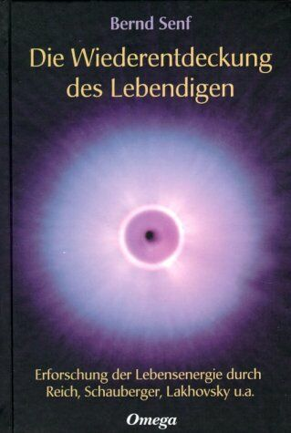

| Home | Inhaltsverzeichnis | Einführung | Ist die Erde bioenergetisch krank? | Die historische Verschüttung des Lebendigen | Buchbesprechungen | Vorträge | ||
|  Die Wiederentdeckung des Lebendigen Gebunden 389 Seiten Omega 1. Auflage März 2003 ISBN: 3930243288 Bestellen |
Erforschung der Lebensenergie durch Reich, Schauberger, Lakhovsky u.a. Die Entdeckung der Lebensenergie durch
Wilhelm Reich, die Forschungen von Viktor Schauberger (über die Bedeutung
der Wirbel- und Fließbewegungen des Wassers) und von Georges Lakhovsky (über
bioenergetische Schwingung und Resonanz) lassen sich zu einem
faszinierenden Bild zusammenfügen: Sie ermöglichen ein grundlegendes
Verständnis lebendiger Prozesse und ihrer Störungen in uns, zwischen uns
und in der "äußeren" Natur sowie der Entstehung von Gewalt.
Und sie zeigen Perspektiven ihrer Überwindung d. h. Wege der inneren und
äußeren Heilung auf. |
|
|
Bernd
Senf, lehrte von 1973 bis März 2009 als Professor für
Volkswirtschaftslehre an der Fachhochschule für Wirtschaft (FHW) Berlin.
Seit April 2009 ist er nur noch frei schaffend tätig – mit Vorträgen,
Seminaren, Workshops, Veröffentlichungen und der Begleitung
zukunftsweisender Projekte. Er ist ein Reich-Kenner,
Lebensenergieforscher und Bioenergetiker. Er ist bekannt für seine
allgemeinverständliche und lebendige Vermittlung komplexer Zusammenhänge.
Sein besonderes Engagement gilt der Herausarbeitung tieferer Ursachen der
Störungen des Lebendigen und dem Aufzeigen von möglichen inneren und äußeren
Wiederbelebungs- und Heilungsprozessen. Buchbesprechungen: Rezension bei der "Initiative Augen Auf" Rezension von Heike Görner bei www.holis.org Rezension auf www.powermetal.de Rezension auf Buchwurm:Info Onlinemagazin Vorträge: Bernd Senf am Kongress "Forderung nach der konkreten Utopie" Bernd Senf zu diesem Buch als CD/MC |
||
|
|
|||||
| Inhaltsverzeichnis (als PDF Datei) zum Buch die Wiederentdeckung des Lebendigen | |||||
|
1. |
Einführung als PDF Datei | ||||
|
1.1 Krankheit und Heilung |
|||||
|
2. |
Die innere Bewegung des Lebendigen | ||||
| 2.1 Sigmund Freuds Tragik Libido
– die wiederentdeckte Lebensenergie 25 / Der Todestrieb – Freuds
große Verdrängung 26 2.2 Wilhelm Reichs Entdeckung des biologischen Kerns |
|||||
| 3. | Mein eigener Weg zu Reich | ||||
| 4. | Die Wiederentdeckung des Lebendigen | ||||
| 4.1 Wilhelm Reich: Erforschung der
Lebensenergie 4.1.1 Die Entwicklung seiner therapeutischen Arbeit Charakterpanzer, Körperpanzer und Vegetotherapie 43 / Der Entstehungsprozeß chronischer Panzerung 44 / Bioenergetisches Verständnis von Krankheit und Gesundheit 50 / Die Bedeutung der Sexualität für die Gesundheit 51 4.1.2 Die Entdeckung der Lebensenergie Lust und Angst – Expansion und Kontraktion Funktionelle Identität bei gleichzeitigen Unterschieden 54 / Die Plasmabewegungen lebender Zellen 56 / Erstarrung und Strukturzerfall 58 / Emotion als Plasmabewegung 59 / Die Entdeckung der Biogenese 59 / Strukturzerfall und spontane Selbstorganisation 62 / Lebensenergetische Strahlungsfelder 68 / Orgonotischer Kontakt, Liebe und Sexualität 70 / Orgonotischer Kontakt und Stillen 72 / Orgonotischer Kontakt zwischen einzelnen Zellen 73 / Krebs als Verlust des energetischen Kontakts 75 4.1.3 Orgonforschung und andere Strahlungsforschungen Die Biophotonenforschung von Fritz Albert Popp 75 / Das geheime Leben der Pflanzen 76 / Die Kirlian-Fotografie 77 4.1.4 Orgonenergie und energetische Heilung Mesmers animalischer Magnetismus 78 / Die Vernichtung der Energieheilung 80 / Das orgonomische Potentialgesetz 82 / Spontane Aufladung des Lebendigen 85 / Wachstum und Sexualität als energetische Entladung 86 / Die Entdeckung der bioenergetischen Immunabwehr 89 / Der Reichsche bioenergetische Bluttest 92 4.1.5 Krebs als bioenergetische Erkrankung 4.1.6 Zur Bauweise des Orgonakkumulators Eigene Erfahrungen 104 / Orgonenergie und Akupunktur: Das ORAC-Rohr 106 / Das Chakra-ORAC 111 / Das ORAC-Kissen 112 / Der Orgonakkumulator wirkt 113 4.1.7 Ist die Erde bioenergetisch krank? Geomantie – heilende, heilige Orte 115 / Funktionelle Identität zwischen Mensch und Organismus Erde 117 / Der blaue Planet – das Lebensenergiefeld der Erde 119 / Die Energiehülle der Erde hat Wunden 120 / Ist die Erde krebskrank? 120 / Energetische Erstarrung der Atmosphäre und Wüstenbildung 121 / Das ORANUR-Experiment 122 / Radioaktivität und bioenergetische Erkrankung 123 / Radioaktivität und Störung der Lebensenergiehülle der Erde 124 4.1.8 Cloudbusting – energetische Heilung der Atmosphäre Elektrosmog und ORANUR-Effekt 128 / Energetische Wetterarbeit nach Reich 136 |
|||||
| 4.2 | Viktor Schauberger: Mit der Natur bewegen | ||||
| 4.2.1 Lebendes und totes Wasser Abtöten von Flüssen durch Begradigung 144 / Wasserrutsche zum Holztransport 145 / Wirbelbewegung und Eiform 147 / Wirbeln und Wiederbeleben toten Wassers 150 / Wirbelbewegung und Lebensenergie 152 / Versorgung mit lebendem Wasser 156 4.2.2 Der Schaubergersche Trichter Das Ei als Urform des Lebens 164 / Levitationsverfahren nach Wilfried Hacheney 165 / Wirbelpflug und Kompostei 168 / Implosion statt Explosion – unsere Techniker bewegen falsch! 169 4.2.3 Wirbelbewegung und Antigravitation Die Entwicklung einer »fliegenden Untertasse« 172 / Schauberger, Reich und UFOs 173 |
|||||
| 4.3 | Georges Lakhovsky: Bioenergetische Schwingung und Resonanz | ||||
| 4.3.1 Sender und Empfänger –
Radiowellen und Organismen 4.3.2 Zellschwingung und Resonanz Gestörte Resonanz und Krankheit 186 / Elektrosmog als bioenergetische Dissonanz 187 / Krankheitserreger als Störsender 188 / Harmonie und Dissonanz in Musik und Natur 189 / Eigenschwingung und Immunabwehr 191 / Energetische Erstarrung und gestörte Resonanz 192 / Resonanztherapie und Heilung 195 / Fieber und Zellkernschmelze 196 / Resonanz und Übererregung 197 4.3.3 Lakhovskys kosmische Energie »Universion« 4.3.4 Störzonen und Krankheit |
|||||
| 4.4 | Paul Schmidt: Schwingung und Heilung | ||||
| Einhandrute und Energiefühligkeit 205 / Energetische Ausstrahlung und Diagnose 206 / Bioenergiesender, Resonanz und Heilung 207 / Die Welt ist Klang bzw. Schwingung 212 / Gemeinsames Funktionsprinzip der Resonanztherapien 213 | |||||
| 4.5 | Roland Plocher: Bioenergetische Heilung kranker Gewässer und Böden | ||||
| 4.5.1 Wunderheilungen kranker Seen Das Plocher-Energiesystem 220 / Energieverdichtung und Informationsübertragung 221 / Gespeicherte Information und energetische Abstrahlung 223 / Plocher und Reich 224 4.5.2 Die Lösung des Gülleproblems Gülle als Belastung von Boden und Grundwasser 226 / Bioenergetische Gülleaufbereitung und Heilung kranker Böden 227 |
|||||
| 4.6 | Arno Herbert: Übertragen und Kopieren von Schwingungen | ||||
| Bau und Anwendung des Herbert-Strahlers 229 / Einstrahlen von Schwingungen in den Organismus 231 / Kopieren von Schwingungsmustern 231 / Informationsübertragung nach dem Radionikprinzip 233 / Das holografische Prinzip: Jeder Teil enthält Informationen über das Ganze 234 / Perspektiven bioenergetischer Selbstbehandlung 237 | |||||
| 4.7 | Dieter Knapp: Lebensenergie sichtbar gemacht | ||||
| Strahlungsfelder homöopathischer Mittel 239 / Bioenergetische Qualitätskontrolle 240 / Bioenergetische Blutdiagnose 242 / Individueller Gesundheitsverträglichkeitstest 242 | |||||
| 5 | Die historische Verschüttung des Lebendigen | ||||
| 5.1 | Lebensenergetisches Wissen und liebevolle »Kulturen« (pdf) | ||||
| 5.2 | Die ethnologische Wiederentdeckung des Lebendigen: Die Trobriander (pdf) | ||||
| 5.3 | Patriarchat, Sexualunterdrückung und Gewalt (pdf) | ||||
| 5.4 | James DeMeo: Die Saharasia-These (pdf) | ||||
| Die Verwüstung der Erde vor 6000 Jahren 250 / Wüstenbildung und Umschlag in Gewalt 252 / Hungerkatastrophe und emotionale Panzerung 254 / Vom Ursprung zur Ausbreitung der Gewalt 255 | |||||
| 5.5 | Kapitalismus und Kolonialismus – Gewaltwellen aus Europa (pdf) | ||||
| Struktur und Dynamik des Kapitalismus 262 / Die ursprüngliche Akkumulation: Offene Gewalt nach innen und außen 262 / Die innere Dynamik des Kapitalismus: Die eigentliche Kapitalakkumulation 269 / Weltweite Zersetzung vorkapitalistischer Produktionsweisen 273 / Die Abrichtung der Kolonien auf die Interessen der Metropole 276 / Kapitalismus, Kolonialismus und »soziale Kernspaltung« 279 / Von der offenen zur strukturellen Gewalt 281 | |||||
| 5.6 | Historische Wurzeln der Bevölkerungsexplosion (pdf) | ||||
| Die Rolle der Hexenverfolgung 285 / Die Vernichtung des Wissens um Lebensenergie 286 / Die Vernichtung des Verhütungswissens als Mittel der Menschenproduktion 288 / Die Reduzierung der Sexualität auf Menschenzucht 289 / Kirchliche Inquisition, Folter und Massenmord 290 / Hexenverbrennung und die Zerstörung der Volksmedizin 293 / Hexenverfolgung und Bevölkerungsentwicklung 295 | |||||
| 5.7 | Rationalismus und mechanistisches Weltbild (pdf) | ||||
| 5.7.1 Erschütterung kirchlicher
Dogmen und Inquisition 5.7.2 Erschütterung wissenschaftlicher Dogmen und neue Inquisition 5.7.3 Die Entwicklung der Wissenschaft: Von der Aufklärung zur dogmatischen Erstarrung. Galileis Begründung der experimentellen Physik 302 / Keplers Entdeckung der Himmelsmechanik 303 / Descartes’ Rationalismus 304 / Newtons Vereinigung von Himmel und Erde 305 / Der Siegeszug des mechanistischen Weltbildes 307 |
|||||
| 5.8 | Herrschende Wissenschaft, Technologie und Verwertungsinteresse (pdf) | ||||
| 5.8.1 Zersplitterung und Verlust
von Ganzheit Kapitalverwertung und Zersplitterung der Arbeit 309 / Arbeitszersplitterung als Kettenreaktion 313 5.8.2 Technologie der Naturbeherrschung Dampfmaschine, Wärmelehre und Entropiegesetz 316 / Entropiegesetz als neues Dogma 317 / Industrielle Technologie und Raubbau an der Natur 319 / Monopolisierung der Energieversorgung 322 / Machtinteressen gegen freie Energie 324 |
|||||
| 5.9 | Moderne Physik – Grundlage eines ökologischen Weltbilds? (pdf) | ||||
| Radiowellen und physikalischer Äther 326 / Die angebliche Widerlegung der Äthertheorien 327 / Die Wiederentdeckung eines wirbelnden Äthers 328 / Radioaktivität und Erschütterung des mechanistischen Weltbilds 329 / Moderne Physik in der Sackgasse 332 / Nekrologie statt Biologie 334 | |||||
| 6 | Zusammenfassung | ||||
| 7 | Innere und äußere Heilung durch Resonanz und Inspiration | ||||
| Anhang | |||||
| Allgemeine Hinweise und Bauanleitungen für kleine Orgonakkumulatoren | |||||
| Anmerkungen | |||||
| Literatur | |||||
| Über den Autor | |||||
| Adressen | |||||
| Register | |||||
| Bildnachweise | |||||
|
|
|||||
|
Einführung zum Buch die Wiederentdeckung des Lebendigen Die Menschheit befindet sich in einer Phase
tiefgreifender, umfassender Zerstörungsprozesse, die die ganze Erde
erfaßt haben und die sich in vielfältigen Krisensymptomen äußern:
wachsendes soziales Elend und Hungerkatastrophen, Eskalation von Gewalt in
Kriegen und Bürgerkriegen, zunehmende Gewalt in den Städten, verheerende
Dürren und Waldbrände, wütende Orkane und große Überschwemmungen,
Winter- und Sommersmog und sterbende Wälder, vergiftete Böden, Gewässer
und »Lebensmittel«, sich ausbreitende Wüsten, wachsendes Ozonloch und
eine erschreckende Zunahme bedrohlicher Krankheiten. 1.3 Die Angst vor dem spontanen Fließen Es scheint eine weitverbreitete und tiefsitzende Angst zu geben vor dieser »Gipfelerfahrung«, ganz ähnlich wie es bei vielen Menschen eine tiefe Angst vor dem sexuellen Gipfelerlebnis des Orgasmus gibt, weil sie in ihrer sexuellen Entwicklung auf dem Weg dorthin immer wieder mit Strafen, Schuldgefühlen, mit Gewalt und Angst beladen und zurückgezerrt worden sind. Und tatsächlich besteht ein tiefer Zusammenhang zwischen dem Zurückschrecken vor der Wiederentdeckung der Lebensenergie und der unbewußten Orgasmusangst. Keiner hat diesen Zusammenhang meines Wissens so überzeugend aufgedeckt wie Wilhelm Reich. CHARAKTERPANZER, KÖRPERPANZER UND ORGASMUSANGST Abb. 2 und 3a,b zeigen diesen Zusammenhang: Die innere
Energiequelle wird durch den Kreis dargestellt, die fließende Energie durch
den geschlängelten Pfeil und der äußere Druck durch den oberen Blitz. Die
unter äußerem Druck entstandene, aber immer mehr verinnerlichte
Herrschaftstruktur bindet ständig einen Teil der Lebensenergie, die aus der
inneren Quelle abgespalten und ins Gegenteil verkehrt wird: Statt lebendiger
Entfaltung und direktem Kontakt erfüllt diese abgespaltene Energie die
Funktion, beides zu blockieren und niederzuhalten. Der äußere Druck, die
äußere Gewalt können später sogar wegfallen, aber die durch sie
entstandenen erstarrten Strukturen wirken unbewußt in gleicher Weise fort:
sie zerstören lebendige Entfaltung, stauen die noch fließende Energie auf
und lenken sie um in Destruktion (die destruktive Entladung wird durch den
unteren Blitz in Abb. 3b dargestellt). PATRIARCHAT UND INNERE SPALTUNG DES MENSCHEN Die globale Eskalation von Gewalt und die globale
Umweltzerstörung sind so betrachtet nur zwei Aspekte ein und desselben
Prozesses, der noch unendlich viele andere Facetten von Zerstörung
hervorgetrieben hat und täglich neu hervortreibt: Die patriarchalisch
geprägte, emotional gepanzerte Menschheit hat den Kontakt zur gemeinsamen
Wurzel alles Lebendigen, den Kontakt zur kosmischen Lebensenergie verloren.
Vielleicht ist es das, was in dem Mythos vom Verlust des Paradieses bildhaft
umschrieben ist und was der tiefen und weitverbreiteten Sehnsucht nach
Wiedervereinigung mit dem Ganzen, den Religionen und der Suche nach Gott
zugrunde liegt. Aber anstatt die verschüttete Lebendigkeit, das Göttliche
in uns selbst wiederzuentdecken und die noch ungebrochene Lebendigkeit neuen
Lebens vor Mißachtung, Gewalt und Zerstörung zu schützen, damit es in
Kontakt mit sich selbst und dem lebendigen Ganzen bleibt, suchen die meisten
kirchlich geprägten Menschen ihren Gott im Jenseits. Die emotional
gepanzerte Menschheit hat ihre innere lebendige Energiequelle, ihren
»biologischen Kern«, wie Reich es nennt, gespalten und dadurch individuell
wie gesellschaftlich destruktive Kräfte erzeugt. Ich möchte deshalb von
»emotionaler Kernspaltung« reden, die in ihrem Funktionsprinzip und in
ihren Auswirkungen auf fatale Weise an die atomare Kernspaltung erinnert:
Hier wie dort wird eine ursprüngliche Ganzheit gespalten, zertrümmert,
zersplittert, und im Prozeß der Spaltung entstehen destruktive Kräfte.
Hier wie dort kommt es zu Kettenreaktionen von Zerstörung, von denen andere
bisher noch nicht gespaltene Ganzheiten in die Spaltung getrieben und
ihrerseits destruktiv werden. DER KAMPF GEGEN DIE INNERE UND DIE ÄUßERE NATUR Es erscheint auf den ersten Blick vielleicht absurd,
diesen Vergleich zwischen atomarer und emotionaler Kernspaltung zu ziehen.
Und dennoch gibt es einen tiefen inneren Zusammenhang zwischen beiden: Die
Spaltung des emotionalen Kerns des Menschen, die Spaltung seiner inneren
Lebensenergiequelle, Druck und Unterdrückung als Antrieb und
Bewegungsprinzip, die Herrschaft des Erstarrten über das Lebendige –
all dies, was dem gepanzerten Menschen selbst angetan wurde, trägt er
unbewußt nach außen in seine sozialen Beziehungen, seine Beziehungen zur
Natur, in die Art und Weise, wie er denkt und fühlt, wie er sich und die
Welt wahrnimmt, in die Spaltung seiner Arbeits- und Lebensverhältnisse;
in die Wissenschaft und Technologie, die er hervorbringt. Selbst unter
Druck aufgewachsen, kann er sich nicht mehr vorstellen, daß sich jemand
oder etwas ohne Druck bewegt, von innen heraus, einfach nur so. Jede
spontane Bewegung macht ihm Angst, muß gebrochen, unter Kontrolle
gebracht und ersetzt werden durch einen äußeren Antrieb, durch äußeren
Druck, durch Gewalt. |
|||||
|
"... Es scheint, als handelt es sich auch hier wieder
um eine funktionelle Identität zwischen individuellem Organismus, sozialem
Organismus und dem Organismus Erde. Je höher der Grad der
energetischen Erstarrung, um so heftiger die gewaltsamen Explosionen und
Eruptionen der aufgestauten Energien. Ist also die in den letzten
Jahrzehnten weltweit gewachsene Zahl und Heftigkeit der Unwetter eine
bioenergetische Reaktion des Organismus Erde auf die ihm zunehmend
widerfahrende energetische Erstarrung und damit Folge der durch Atomkraft
und Elektrosmog, aber auch durch wachsende Schadstoffbelastung und
Vergiftung verursachte bioenergetische Erkrankung der Erde?" 4.1.7 Ist die Erde bioenergetisch krank?
PDF-Datei 280kB Satellitenbilder von Hurrikan Katrina und weiterer
Hurrikane: |
|||||
|
|
|||||
|
Ganzes Kapitel 5 als pdf Datei 5.1 Lebensenergetisches Wissen und liebevolle »Kulturen« Teilweise wurden diese Weisheiten in langen Traditionen
überliefert oder haben im Untergrund patriarchalischer Kulturen
überdauert, teilweise wurden sie in einer Art ethnologischer Spurensuche
oder auch angeregt durch Inspiration wiederentdeckt und wissenschaftlich
bzw. erfahrungsmäßig erforscht. Vieles deutet mittlerweile darauf hin,
daß das Wissen um die Funktion der Lebensenergie bis vor einigen tausend
Jahren über den ganzen Erdball verbreitet war und daß die menschlichen
Gemeinschaften, die im Einklang mit diesen Funktionen lebten, friedliche und
liebevolle Gesellschaften waren – liebevoll zwischen den Geschlechtern,
zwischen den verschiedenen Generationen und im Verhältnis zur übrigen
Natur. Das liegt ganz einfach daran, daß sich die
Geschichtsschreibung und das, was wir »Geschichte« nennen, ziemlich genau
auf die letzten 6000 Jahre bezieht, zu deren Beginn die Gewalt in die
menschliche Gesellschaft eingebrochen ist und sich von da an immer weiter
ausgebreitet hat. Aus der Zeit vorher, der »Vorgeschichte«, gibt es keine
schriftlichen Überlieferungen, also offenbar auch keine Schriftsprache. Der
Zeitraum, seit dem es so etwas wie Menschen auf dem Planeten gibt, wird im
allgemeinen mit zwei Millionen Jahren angesetzt. »Geschichte« ist also nur
ein lächerlich kleiner Teil der bisherigen Menschheitsentwicklung: von zwei
Millionen Jahren ganze 6000 Jahre! Wilhelm Reich hatte diese These von Freud in den dreißiger Jahren grundlegend in Frage gestellt. Die Wiederentdeckung und Freilegung des lebendigen, liebevollen Kerns im einzelnen Menschen im Zuge der Auflockerung charakterlicher und körperlicher Panzerungen hatte in ihm immer drängender die Frage aufkommen lassen, ob es nicht irgendwo und irgendwann auf der Welt Gesellschaften gibt oder gegeben hat, die eine freie Entfaltung der Sexualität, einschließlich der kindlichen sexuellen Erregung, ermöglichte, anstatt sie in die Verdrängung zu zwingen und in Destruktivität umzulenken. Bei dieser Suche stieß Reich seinerzeit auf die ethnologischen Forschungen von Bronislaw Malinowski über eine auf den Trobriand-Inseln lebende Gesellschaft, in der noch in den zwanziger Jahren Kinder und Jugendliche ihre Sexualität voller Lust und Lebensfreude und ohne Schuldgefühle ausleben konnten. Die Sexualität der Erwachsenen war allerdings sehr deutlichen Einschränkungen einer monogamen Ehe unterworfen. Bei den Trobriandern soll es keine Gewalt, keine Neurosen und Psychosen gegeben haben. Auf der benachbarten AmphlettInsel hingegen, wo die christliche Missionierung bereits deutliche Spuren in Form sexualfeindlicher Moral hinterlassen hatte, waren derlei Erscheinungsformen menschlicher Destruktivität verbreitet. Reich, der diese Forschungen in seinem Buch »Der Einbruch
der Sexualmoral« (1932) verarbeitete und sexualökonomisch interpretierte,
sah darin eine deutliche Untermauerung seiner Hypothese, daß Gewalt nicht
unabänderlich in der menschlichen Triebnatur verankert ist, sondern daß
sie erst durch Unterdrückung und Verdrängung der Sexualität entsteht bzw.
entstanden ist. Die Trobriander-Gesellschaft interpretierte
er entsprechend als eine Gesellschaft im Übergang, in der noch deutliche
Elemente einer Sexualbejahung (in bezug auf die kindliche und jugendliche
Sexualität), aber auch schon Ansätze einer Sexualeinschränkung (bei den
Erwachsenen und wegen bestimmter materieller Interessen auch bei den Kindern
des Häuptlings) vorhanden waren. Seine Vermutung war die, daß die
Trobriander-Gesellschaft in früheren Phasen keine Einschränkung der
Sexualität kannte und daß es vielleicht ganz allgemein sexualbejahende
Gesellschaften auf der Erde gegeben habe, in die aus bestimmten Gründen die
sexuelle Zwangsmoral eingebrochen sei und sich von da an immer weiter
durchgesetzt habe. Während in der Trobriander-Gesellschaft die Durchsetzung
sexueller Zwangsmoral noch relativ am Anfang stehe und nur Teilbereiche der
Gesellschaft erfaßt habe, sei dieser Prozeß in unserer Gesellschaft schon
viel weiter fortgeschritten, viel umfassender und viel tiefer verankert.
(Bis heute hat sich die Trobriander-Gesellschaft übrigens ein
ungewöhnliches Maß an freier Entfaltung der Kinder und sexueller
Freizügigkeit der Jugendlichen bewahrt.)114 |
|||||
Home
| Inhaltsverzeichnis |
Einführung | Ist die Erde bioenergetisch krank?
| Die
historische Verschüttung des Lebendigen | Buchbesprechungen
| Vorträge
<<<<<
Version: 31.03.09 19:46:28